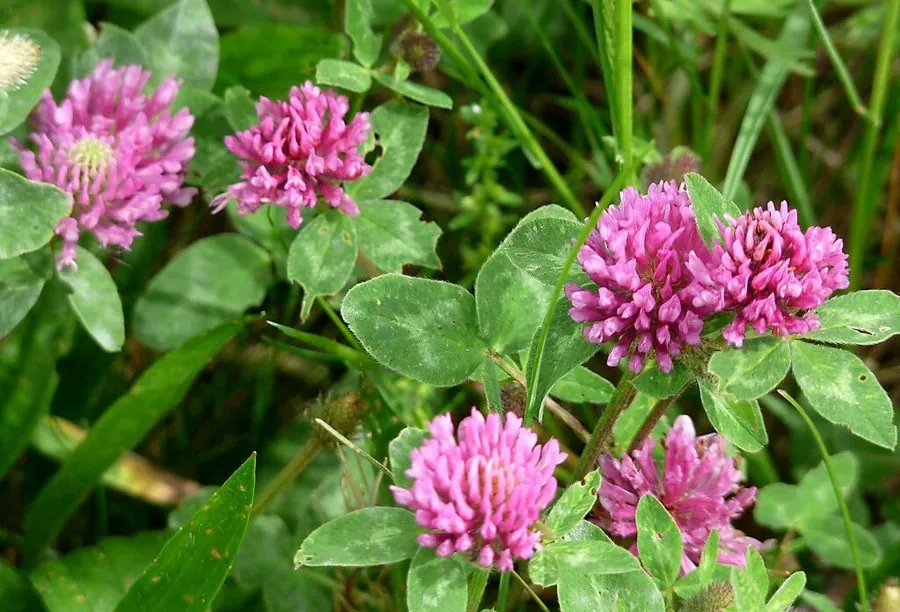

农作物与经济植物 · 植物界
红三叶 Trifolium pratense

豆科车轴草属多年生草本，花冠紫红色、花序球状，蛋白含量高，是优良的牧草、绿肥与水土保持植物。
- 分类
- 门被子植物门纲木兰纲目豆目科豆科属车轴草属
- 栖息环境
- 温带凉爽湿润地区，耐寒、耐湿，喜疏松肥沃的土壤
- 地理分布
- 原产欧洲与西亚；中国南北各地及世界温带地区广泛栽培
- 保护级别
- IUCN 暂无评估；栽培广泛，野生种群未受明显威胁
物种志
红三叶为多年生草本，高 30–80 厘米，茎直立或斜升，多分枝，被柔毛。叶为三出复叶，小叶卵形至椭圆形，长 2–5 厘米，叶面常有白色“V”形斑纹，托叶宽大。花序头状、球形，直径 2–3 厘米，花冠紫红色至淡紫色，花冠筒较长；荚果细小，内含 1–2 粒种子。
红三叶原产欧洲与西亚，在中国南北均有栽培，耐寒、耐湿，喜凉爽湿润的气候，是温带重要的牧草与绿肥作物。它的茎叶富含蛋白质，适合调制干草或青贮，是奶牛的重要饲料；根瘤能固氮，可提高土壤肥力。红三叶的花序大而艳丽，也是优良的蜜源与观赏植物。与白三叶相比，红三叶植株更高、花更大、更耐寒湿。
形态与习性
- 株高30–80 厘米，茎直立或斜升
- 花期5–8 月，花冠紫红色
- 果期8–9 月，荚果细小
- 光照喜光，长日照作物
- 水分喜湿润，耐寒也耐湿
- 土壤以疏松肥沃、排水良好的壤土为佳
- 主要用途牧草、绿肥、水土保持与蜜源
趣味知识
- 红三叶的花序比白三叶更大、颜色更深，是温带草地上的常见野花。
- 它的花冠筒较长，需要熊蜂等长口器昆虫才能有效传粉。
- 红三叶是优质的奶牛饲料，常被制成干草或青贮。
- 它的根瘤能固氮，与禾本科牧草混播可提高草地生产力。